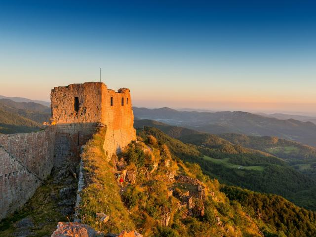
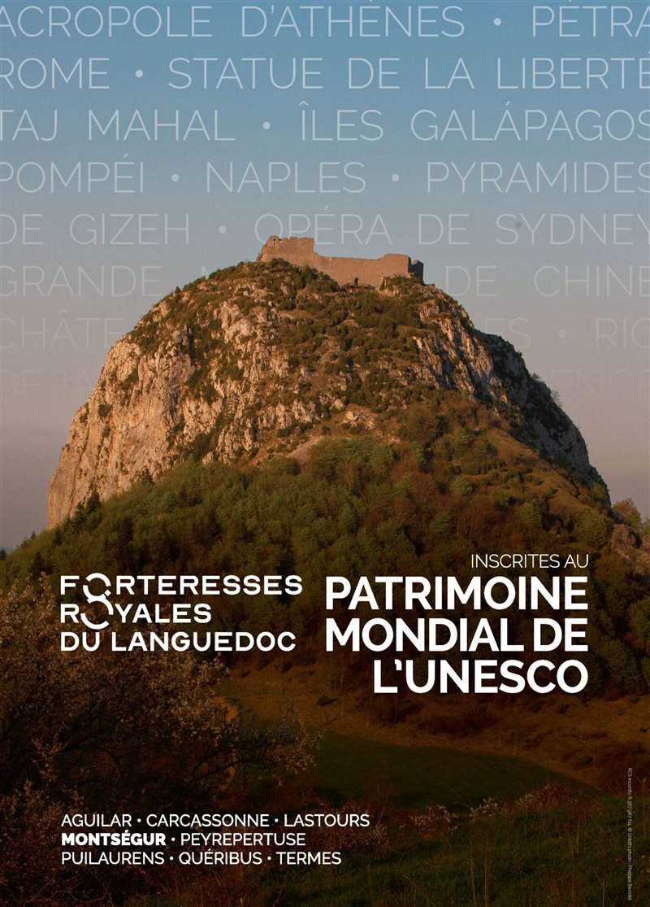
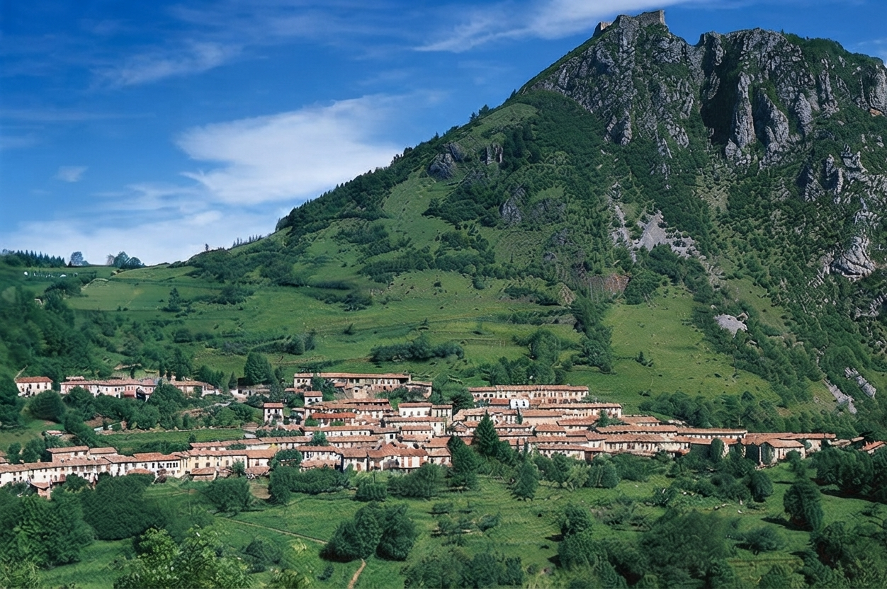
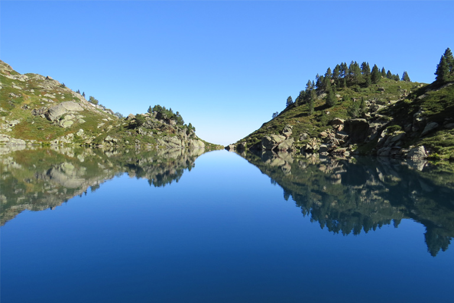
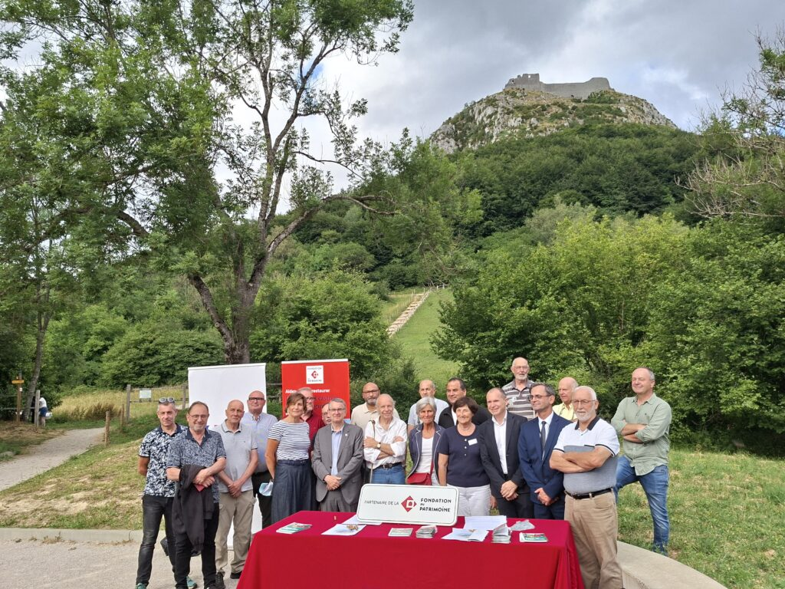
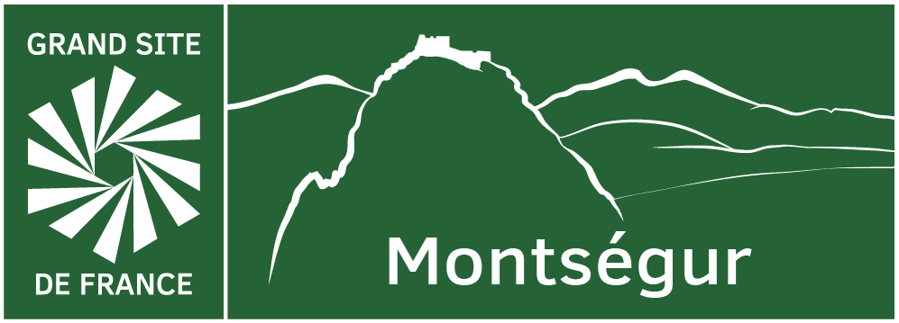

Montségur et le Catharisme
L'histoire de Montségur et de son château a été établie à partir de documents historiques, notamment les archives de l'Inquisition, et des fouilles archéologiques menées sur le site.
En savoir plusLa cité majeure du catharisme, inscrite au patrimoine mondial de l'UNESCO.
Patrimoine mondial
Ils sont huit. Huit sublimes châteaux campés entre Aude et Ariège inscrits à l'Unesco. De la Cité de Carcassonne au château d'Aguilar en passant par ceux de Lastours, Montségur, Peyrepertuse, Puilaurens, Termes ou encore Quéribus, tous ont en commun une beauté imparable et une histoire exceptionnelle qui leur donnent une valeur universelle évidente.
En savoir plus
Découvrir

L'histoire de Montségur et de son château a été établie à partir de documents historiques, notamment les archives de l'Inquisition, et des fouilles archéologiques menées sur le site.
En savoir plus
En moyenne montagne, Montségur est tourné à la fois vers Lavelanet et le piémont, et vers ses forêts et ses estives. Le village vit du tourisme et de nombreux résidents attachés à la région.
En savoir plus
La réserve naturelle régionale du Massif du Saint-Barthélemy s'étend sur 500 ha, sur le versant nord du Pic de Soularac (2 368 m), plus haut sommet des montagnes nord-pyrénéennes.
En savoir plusActualités

La convention a été signée au pied du pog en présence du maire, Sébastien Mounié, du préfet de l'Ariège, des élus du territoire, de la Fondation du Patrimoine et de nombreux habitants. Ce moment ouvre officiellement la campagne de dons.

À Lavelanet, lors de la fête de la Montagne, le maire de Montségur a inauguré la labellisation Grand Site de France en présence des élus du territoire. Une journée pour rappeler la place centrale de Montségur, phare du Pays d'Olmes.
Contact
Une question sur la visite du château ou sur la vie du village ? La mairie et le guide du château vous répondent.
Préparer ma venueMairie de Montségur
32 rue du village
09300 Montségur
Téléphone 05 61 01 10 27
Mairie mairie.montsegur@orange.fr
Guide du château guide.montsegur@orange.fr